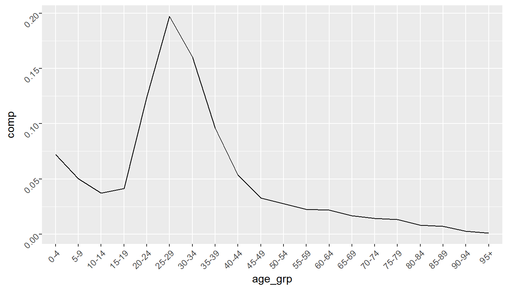

Chapter 8 Describing Bilteral Migration Data
8.1 Components
8.1.1 Multiplicative Component Model
- Rogers et al. (2002) proposed dis-aggregating origin-destination flow tables into separate components to allow for an easier examination of migration flows
- Overall component - level of migration \(\gamma\)
- Origin component - relative ‘pushes’ from each region \(\alpha_i\)
- Destination component - relative ‘pulls’ to each region \(\beta_j\)
- Origin–Destination interaction component - physical or social distance between places not explained by the overall and main effects. \(\delta_{ij}\)
- Simple calculations to estimate each component: \[ \gamma = m_{++} \qquad \alpha_i = \dfrac{m_{i+}}{m_{++}} \qquad \beta_j = \dfrac{m_{+j}}{m_{++}} \qquad \delta_{ij} = \dfrac{m_{ij}}{\gamma\alpha_i\beta_j} \]
- The interaction, \(\delta_{ij}\), is the ratio of observed flow to an expected flow (for the case of no interaction).
8.1.2 Multiplicative Component Model
- The dis-aggregation of the components is multiplicative: \[ m_{ij} = \gamma \alpha_i \beta_j \delta_{ij} \]
- Equivalent to a saturated Poisson regression model (\(R^2 = 1\)) where
- \(\gamma\) is constant term
- \(\alpha_i\) is categorical term for the origin regions
- \(\beta_j\) is categorical term for the destination regions
- \(\delta_{ij}\) is an interaction term between the \(\alpha_i\) and \(\beta_j\) \[ \log m_{ij} = \gamma + \alpha_i ORIG_i + \beta_j DEST_j + \delta_i ORIG_i:DEST_j \]
- When data is in a tidy format with row \(h\) would be: \[ \log y_{h} = \beta_0 + \beta_1 ORIG_{h} + \beta_2 DEST_{h} + \beta_3 ORIG_{h}:DEST_{h} \]
- Poisson regression models such as these - where all the predictor variables are categorical - are also know as log-linear models
- Standard functions for fitting regression models, such as
glm()in R will provide the same fitted values, but different parameter estimates- Use different coding system for the constraints when estimating parameters
- Rogers’ terms the parameter estimates using the equations for \(\gamma, \alpha_i, \beta_j\) and \(\delta_{ij}\) above the total reference coding system
8.1.3 Multiplicative Component Model
- The migest package contains a
multi_comp()function to generate parameter estimates from an origin-destination flow matrix- Demonstrate with previous dummy data set
r <- LETTERS[1:4]
m0 <- matrix(data = c(0, 100, 30, 70,
50, 0, 45, 5,
60, 35, 0, 40,
20, 25, 20, 0),
nrow = 4, ncol = 4, byrow = TRUE,
dimnames = list(orig = r, dest = r))
addmargins(m0)## dest
## orig A B C D Sum
## A 0 100 30 70 200
## B 50 0 45 5 100
## C 60 35 0 40 135
## D 20 25 20 0 65
## Sum 130 160 95 115 5008.1.4 Multiplicative Component Model
library(tidyverse)
library(migest)
m0 %>%
multi_comp() %>%
round(3)## dest
## orig A B C D Sum
## A 0.000 1.563 0.789 1.522 0.400
## B 1.923 0.000 2.368 0.217 0.200
## C 1.709 0.810 0.000 1.288 0.270
## D 1.183 1.202 1.619 0.000 0.130
## Sum 0.260 0.320 0.190 0.230 500.0008.1.5 Multiplicative Component Model
- As the model is saturated, the fitted values are the same as the observed values.
multi_comp(m = m0)## dest
## orig A B C D Sum
## A 0.0000000 1.5625000 0.7894737 1.5217391 0.4000000
## B 1.9230769 0.0000000 2.3684211 0.2173913 0.2000000
## C 1.7094017 0.8101852 0.0000000 1.2882448 0.2700000
## D 1.1834320 1.2019231 1.6194332 0.0000000 0.1300000
## Sum 0.2600000 0.3200000 0.1900000 0.2300000 500.0000000# fitted value for A to B
500 * 0.4 * 0.32 * 1.5625## [1] 1008.1.6 Multiplicative Component Model
- The total reference coding scheme for the parameter estimates are easier to examine than parameter estimates from a Poisson model fitted using
glm()- More detail on
glm()in next section
- More detail on
d0 <- as.data.frame.table(x = m0, responseName = "flow")
f0 <- glm(formula = flow ~ orig + dest + orig * dest, family = poisson(),
data = d0)
f0##
## Call: glm(formula = flow ~ orig + dest + orig * dest, family = poisson(),
## data = d0)
##
## Coefficients:
## (Intercept) origB origC origD destB destC
## -24.30 28.21 28.40 27.30 28.91 27.70
## destD origB:destB origC:destB origD:destB origB:destC origC:destC
## 28.55 -57.12 -29.45 -28.68 -27.81 -56.10
## origD:destC origB:destD origC:destD origD:destD
## -27.70 -30.85 -28.96 -55.85
##
## Degrees of Freedom: 15 Total (i.e. Null); 0 Residual
## Null Deviance: 463.7
## Residual Deviance: 2.232e-10 AIC: 96.278.1.7 Multiplicative Component Model
# fitted and observed values are the same
d0 %>%
as_tibble() %>%
mutate(fit = round(f0$fitted.values, digits = 5))## # A tibble: 16 x 4
## orig dest flow fit
## <fct> <fct> <dbl> <dbl>
## 1 A A 0 0
## 2 B A 50 50
## 3 C A 60 60
## 4 D A 20 20
## 5 A B 100 100
## 6 B B 0 0
## 7 C B 35 35
## 8 D B 25 25
## 9 A C 30 30
## 10 B C 45 45
## 11 C C 0 0
## 12 D C 20 20
## 13 A D 70 70
## 14 B D 5 5
## 15 C D 40 40
## 16 D D 0 08.1.8 Multiplicative Component Model
- Rogers’ and colleagues have used the multiplicative component model to estimate migration flow tables
- Expand to multiple dimensions
- Rectify bumpy age schedules
- Replace reported age parameters (proportions) in the multiplicative component model with proportions from a more regular schedule.
- Multiply the new age parameters with the existing total, origin, destination and interaction parameters to obtain new estimated flows.
8.1.9 Multiplicative Component Model
- Italian data in migest package
italy_area## # A tibble: 3,500 x 5
## orig dest year age_grp flow
## <chr> <chr> <dbl> <fct> <dbl>
## 1 North-West North-West 1970 0-4 0
## 2 North-East North-West 1970 0-4 2350
## 3 Center North-West 1970 0-4 1687
## 4 South North-West 1970 0-4 9697
## 5 Islands North-West 1970 0-4 5139
## 6 North-West North-East 1970 0-4 2448
## 7 North-East North-East 1970 0-4 0
## 8 Center North-East 1970 0-4 1063
## 9 South North-East 1970 0-4 1560
## 10 Islands North-East 1970 0-4 689
## # ... with 3,490 more rows8.1.10 Multiplicative Component Model
# single year, multiple age groups
c0 <- italy_area %>%
filter(year == 2000) %>%
multi_comp()
round(c0, 3)## , , age_grp = 0-4
##
## dest
## orig Center Islands North-East North-West South Sum
## Center 0.000 1.401 0.859 0.909 2.370 0.010
## Islands 0.970 0.000 1.181 1.513 0.681 0.012
## North-East 1.053 1.916 0.000 1.179 2.501 0.010
## North-West 0.877 2.490 0.887 0.000 2.023 0.014
## South 1.409 0.531 1.184 1.102 0.000 0.025
## Sum 0.016 0.007 0.017 0.018 0.014 0.072
##
## , , age_grp = 5-9
##
## dest
## orig Center Islands North-East North-West South Sum
## Center 0.000 1.589 0.779 0.762 2.243 0.007
## Islands 1.166 0.000 1.393 1.707 0.562 0.010
## North-East 0.840 1.932 0.000 0.936 2.085 0.006
## North-West 0.877 2.714 0.844 0.000 1.963 0.010
## South 1.387 0.507 1.283 1.151 0.000 0.018
## Sum 0.011 0.005 0.012 0.012 0.009 0.050
##
## , , age_grp = 10-14
##
## dest
## orig Center Islands North-East North-West South Sum
## Center 0.000 1.570 0.738 0.667 1.978 0.005
## Islands 1.333 0.000 1.572 1.791 0.463 0.008
## North-East 0.861 1.834 0.000 0.840 1.805 0.004
## North-West 0.793 2.694 0.826 0.000 1.959 0.007
## South 1.424 0.411 1.332 1.226 0.000 0.014
## Sum 0.009 0.004 0.010 0.009 0.006 0.037
##
## , , age_grp = 15-19
##
## dest
## orig Center Islands North-East North-West South Sum
## Center 0.000 1.358 0.732 0.668 1.673 0.005
## Islands 1.261 0.000 1.617 2.109 0.417 0.009
## North-East 0.677 1.769 0.000 0.847 1.697 0.004
## North-West 0.629 2.606 0.818 0.000 1.803 0.007
## South 1.449 0.347 1.449 1.340 0.000 0.016
## Sum 0.009 0.004 0.011 0.011 0.006 0.041
##
## , , age_grp = 20-24
##
## dest
## orig Center Islands North-East North-West South Sum
## Center 0.000 1.044 0.852 0.759 1.552 0.014
## Islands 0.983 0.000 1.490 1.948 0.436 0.025
## North-East 0.593 1.530 0.000 0.852 1.808 0.012
## North-West 0.533 1.880 0.726 0.000 1.449 0.018
## South 1.419 0.425 1.788 1.624 0.000 0.055
## Sum 0.025 0.009 0.036 0.037 0.017 0.124
##
## , , age_grp = 25-29
##
## dest
## orig Center Islands North-East North-West South Sum
## Center 0.000 1.092 0.992 0.939 2.093 0.027
## Islands 0.915 0.000 1.221 1.599 0.544 0.034
## North-East 0.910 1.420 0.000 1.161 1.829 0.023
## North-West 0.795 1.652 0.947 0.000 1.719 0.034
## South 1.473 0.482 1.457 1.373 0.000 0.079
## Sum 0.044 0.014 0.053 0.054 0.032 0.197
##
## , , age_grp = 30-34
##
## dest
## orig Center Islands North-East North-West South Sum
## Center 0.000 1.211 1.088 1.159 2.136 0.025
## Islands 0.915 0.000 1.053 1.390 0.526 0.025
## North-East 1.143 1.384 0.000 1.362 1.837 0.021
## North-West 0.945 1.857 1.091 0.000 1.756 0.031
## South 1.544 0.445 1.205 1.244 0.000 0.059
## Sum 0.039 0.012 0.040 0.043 0.027 0.160
##
## , , age_grp = 35-39
##
## dest
## orig Center Islands North-East North-West South Sum
## Center 0.000 1.439 1.175 1.245 2.126 0.016
## Islands 0.956 0.000 1.073 1.372 0.407 0.015
## North-East 1.278 1.396 0.000 1.484 1.719 0.013
## North-West 1.158 2.026 1.229 0.000 1.753 0.020
## South 1.465 0.424 1.089 1.085 0.000 0.032
## Sum 0.024 0.008 0.024 0.025 0.015 0.096
##
## , , age_grp = 40-44
##
## dest
## orig Center Islands North-East North-West South Sum
## Center 0.000 1.547 1.283 1.266 2.200 0.009
## Islands 1.001 0.000 1.090 1.445 0.367 0.008
## North-East 1.322 1.563 0.000 1.417 1.626 0.007
## North-West 1.234 2.353 1.261 0.000 1.885 0.012
## South 1.317 0.354 1.044 1.001 0.000 0.017
## Sum 0.013 0.005 0.014 0.014 0.009 0.054
##
## , , age_grp = 45-49
##
## dest
## orig Center Islands North-East North-West South Sum
## Center 0.000 1.638 1.130 1.204 2.331 0.005
## Islands 1.076 0.000 1.100 1.372 0.400 0.005
## North-East 1.406 1.701 0.000 1.501 1.607 0.005
## North-West 1.320 2.600 1.354 0.000 2.007 0.008
## South 1.286 0.408 0.919 0.912 0.000 0.010
## Sum 0.008 0.003 0.008 0.008 0.006 0.033
##
## , , age_grp = 50-54
##
## dest
## orig Center Islands North-East North-West South Sum
## Center 0.000 1.887 1.064 1.110 2.579 0.005
## Islands 0.997 0.000 0.861 1.226 0.361 0.004
## North-East 1.449 1.709 0.000 1.505 1.541 0.004
## North-West 1.519 3.174 1.595 0.000 2.391 0.008
## South 1.267 0.366 0.738 0.831 0.000 0.007
## Sum 0.007 0.003 0.006 0.006 0.005 0.028
##
## , , age_grp = 55-59
##
## dest
## orig Center Islands North-East North-West South Sum
## Center 0.000 2.263 1.084 1.029 2.894 0.004
## Islands 0.845 0.000 0.643 1.027 0.343 0.003
## North-East 1.448 1.641 0.000 1.455 1.391 0.003
## North-West 1.724 3.929 1.892 0.000 2.921 0.008
## South 1.160 0.398 0.544 0.722 0.000 0.005
## Sum 0.006 0.003 0.005 0.005 0.005 0.023
##
## , , age_grp = 60-64
##
## dest
## orig Center Islands North-East North-West South Sum
## Center 0.000 2.271 1.067 1.084 3.282 0.004
## Islands 0.767 0.000 0.397 0.933 0.414 0.002
## North-East 1.331 1.473 0.000 1.578 1.500 0.003
## North-West 1.633 4.038 1.938 0.000 3.047 0.008
## South 1.245 0.395 0.444 0.734 0.000 0.005
## Sum 0.005 0.003 0.004 0.004 0.005 0.022
##
## , , age_grp = 65-69
##
## dest
## orig Center Islands North-East North-West South Sum
## Center 0.000 2.383 1.159 1.030 3.451 0.003
## Islands 0.827 0.000 0.435 0.876 0.385 0.002
## North-East 1.222 1.237 0.000 1.629 1.439 0.002
## North-West 1.518 3.324 1.891 0.000 2.933 0.005
## South 1.340 0.479 0.419 0.874 0.000 0.004
## Sum 0.004 0.002 0.003 0.004 0.004 0.017
##
## , , age_grp = 70-74
##
## dest
## orig Center Islands North-East North-West South Sum
## Center 0.000 2.409 0.999 1.353 3.269 0.003
## Islands 0.723 0.000 0.381 1.253 0.385 0.002
## North-East 1.301 1.200 0.000 1.765 1.113 0.002
## North-West 1.421 2.608 1.719 0.000 2.445 0.004
## South 1.451 0.432 0.460 1.065 0.000 0.004
## Sum 0.004 0.001 0.003 0.004 0.003 0.014
##
## , , age_grp = 75-79
##
## dest
## orig Center Islands North-East North-West South Sum
## Center 0.000 1.926 1.174 1.311 2.957 0.003
## Islands 0.819 0.000 0.352 1.352 0.431 0.002
## North-East 1.395 0.840 0.000 2.114 0.929 0.002
## North-West 1.327 2.463 1.810 0.000 1.963 0.003
## South 1.450 0.437 0.488 1.173 0.000 0.004
## Sum 0.003 0.001 0.003 0.004 0.002 0.013
##
## , , age_grp = 80-84
##
## dest
## orig Center Islands North-East North-West South Sum
## Center 0.000 1.846 1.070 1.503 2.636 0.002
## Islands 0.804 0.000 0.428 1.295 0.519 0.001
## North-East 1.466 0.631 0.000 2.117 0.986 0.001
## North-West 1.232 2.001 1.825 0.000 1.826 0.002
## South 1.571 0.408 0.493 1.258 0.000 0.003
## Sum 0.002 0.001 0.002 0.002 0.001 0.008
##
## , , age_grp = 85-89
##
## dest
## orig Center Islands North-East North-West South Sum
## Center 0.000 1.545 1.509 1.606 2.575 0.001
## Islands 0.739 0.000 0.383 1.345 0.414 0.001
## North-East 1.766 1.254 0.000 2.809 0.913 0.001
## North-West 1.090 1.667 1.944 0.000 1.395 0.002
## South 1.410 0.301 0.415 1.240 0.000 0.002
## Sum 0.002 0.000 0.001 0.002 0.001 0.007
##
## , , age_grp = 90-94
##
## dest
## orig Center Islands North-East North-West South Sum
## Center 0.000 1.319 1.211 1.906 2.277 0.001
## Islands 0.809 0.000 0.418 1.033 0.359 0.000
## North-East 1.469 1.083 0.000 2.835 0.660 0.000
## North-West 1.494 1.635 2.216 0.000 1.778 0.001
## South 1.452 0.250 0.387 1.142 0.000 0.001
## Sum 0.001 0.000 0.001 0.001 0.000 0.003
##
## , , age_grp = 95+
##
## dest
## orig Center Islands North-East North-West South Sum
## Center 0.000 0.886 1.076 1.504 2.207 0.000
## Islands 0.847 0.000 0.521 0.835 0.523 0.000
## North-East 1.383 1.750 0.000 2.340 0.698 0.000
## North-West 1.707 2.593 2.149 0.000 2.263 0.000
## South 1.394 0.485 0.523 0.965 0.000 0.000
## Sum 0.000 0.000 0.000 0.000 0.000 0.001
##
## , , age_grp = Sum
##
## dest
## orig Center Islands North-East North-West South Sum
## Center 0.000 0.017 0.037 0.039 0.054 0.148
## Islands 0.038 0.000 0.048 0.067 0.013 0.166
## North-East 0.030 0.016 0.000 0.041 0.037 0.125
## North-West 0.045 0.037 0.056 0.000 0.063 0.202
## South 0.120 0.013 0.111 0.115 0.000 0.360
## Sum 0.233 0.084 0.253 0.263 0.168 277436.0008.1.11 Multiplicative Component Model
# origin components (shares)
c0 %>%
as.data.frame.table(responseName = "comp") %>%
filter(orig != "Sum", dest == "Sum", age_grp == "Sum")## orig dest age_grp comp
## 1 Center Sum Sum 0.1477314
## 2 Islands Sum Sum 0.1663483
## 3 North-East Sum Sum 0.1245945
## 4 North-West Sum Sum 0.2017835
## 5 South Sum Sum 0.3595424# destination components (shares)
c0 %>%
as.data.frame.table(responseName = "comp") %>%
filter(orig == "Sum", dest != "Sum", age_grp == "Sum")## orig dest age_grp comp
## 1 Sum Center Sum 0.23305555
## 2 Sum Islands Sum 0.08368777
## 3 Sum North-East Sum 0.25254113
## 4 Sum North-West Sum 0.26283900
## 5 Sum South Sum 0.167876568.1.12 Multiplicative Component Model
# age components
c0 %>%
as.data.frame.table(responseName = "comp") %>%
filter(orig == "Sum", dest == "Sum", age_grp != "Sum") %>%
ggplot(mapping = aes(x = age_grp, y = comp, group = 1)) +
geom_line() +
theme(axis.text = element_text(angle = 45, hjust = 1))
8.2 Log-Linear Models
8.2.1 Log-Linear Models
- Rogers’ and collaborators like to shorten the multiplicative form of the log-linear model to use capital letters to represent parameters \[ m_{ij} = \gamma \alpha_i \beta_j \delta_{ij} = T O_i D_j OD_{ij} \]
- When there is multiple origin-destination tables, by different age groups, sex, education level, etc,… the notation can be easily used to study different log-linear models \[ m_{ij} = T O_i D_j A_x OD_{ij} OA_{ix} \]
- When data is in a tidy format with row \(h\) would be: \[ \begin{aligned} \log y_{h} =& \beta_0 + \beta_1 ORIG_{h} + \beta_2 DEST_{h} + \beta_3 AGE_{x} + \\ &\beta_4 ORIG_{h}:DEST_{h} + \beta_5 ORIG_{h}:AGE_{h} \end{aligned} \]
8.2.2 Log-Linear Models
- We can fit log-linear models in R using the
glm()function (for generalised linear models) - Requires a
formula,dataandfamilyargument - The
formulaargument is similar to that inxtabs(), where we use the~symbol to separate the the response and explanatory variables- For example the model in the previous slide would use
formula = flow ~ orig + dest + age + orig:dest + orig:age - Use
:or*to denote interactions
- For example the model in the previous slide would use
- The
familyargument should be set topoisson()for a log-linear model
8.2.3 Log-Linear Models
- Example with age-specific migration flows between Italian regions in 1970
d1 <- italy_area %>%
filter(orig != dest,
year == 1970) %>%
# rename so later output fits on slide
rename(age = age_grp)
d1## # A tibble: 400 x 5
## orig dest year age flow
## <chr> <chr> <dbl> <fct> <dbl>
## 1 North-East North-West 1970 0-4 2350
## 2 Center North-West 1970 0-4 1687
## 3 South North-West 1970 0-4 9697
## 4 Islands North-West 1970 0-4 5139
## 5 North-West North-East 1970 0-4 2448
## 6 Center North-East 1970 0-4 1063
## 7 South North-East 1970 0-4 1560
## 8 Islands North-East 1970 0-4 689
## 9 North-West Center 1970 0-4 2097
## 10 North-East Center 1970 0-4 1183
## # ... with 390 more rows8.2.4 Log-Linear Models
glm(formula = flow ~ orig + dest, family = poisson(), data = d1)##
## Call: glm(formula = flow ~ orig + dest, family = poisson(), data = d1)
##
## Coefficients:
## (Intercept) origIslands origNorth-East origNorth-West origSouth
## 6.39791 0.17515 -0.20852 0.99427 0.98847
## destIslands destNorth-East destNorth-West destSouth
## -0.76940 -0.32536 1.08367 0.02188
##
## Degrees of Freedom: 399 Total (i.e. Null); 391 Residual
## Null Deviance: 758100
## Residual Deviance: 5e+05 AIC: 5031008.3 Dimensions
8.3.1 Log-Linear Model Analysis
- As we increase the number of dimensions of the data, it might become important to understand which dimensions of the data are most important
- We can use log-linear models with detailled migration data to
- Understand the dominate dimensions, for example Imhoff et al. (1997) Rogers et al. (2002)
- Predict origin-destination flows with partial data, for example Beer et al. (2010) Rogers, Willekens, and Raymer (2003) Raymer (2007)
- Project detailed origin-destination flows, for example Raymer, Bonaguidi, and Valentini (2006)
- All the above examples involve fitting a number log-linear models based on different dimensions of the data frames
- Use model fit statistics to judge the best model
8.3.2 Log-Linear Model Analysis
- One approach to choosing the most important dimensions is to fit all possible combinations of models - known as dredging the model space
- The
dredge()function in the MuMIn package will fit all combinations of regression models given an upper limit, i.e. the most complex model.- The number of combinations grows exponentially with the number of predictors
- Does not allow
na.action = "na.omit"- set by default inglm()for handling missing values in regression models
8.3.3 Log-Linear Model Analysis
- Fit the most complex model using
glm().- Set
na.action = na.failto exclude failed models in when using thedredge()function later - Most complex model typically involves at least all two-way interactions
- Set
- The
formulaargument inglm()allows the use()^2to construct all two-way interactions, i.e. the below give the identical outputs- Use
()^3for all three way interactions
- Use
f1 <- glm(formula = flow ~ (orig + dest + age)^2,
family = poisson(), data = d1, na.action = na.fail)
f2 <- glm(formula = flow ~ orig * dest + orig * age + dest * age,
family = poisson(), data = d1, na.action = na.fail)
# check terms used in models
attr(f1$terms, "term.labels")## [1] "orig" "dest" "age" "orig:dest" "orig:age" "dest:age"attr(f2$terms, "term.labels")## [1] "orig" "dest" "age" "orig:dest" "orig:age" "dest:age"8.3.4 Log-Linear Model Analysis
- Models will have many estimated coefficients
- Some will be non-determinable because no observations (e.g. diagonal terms such as
origIslands:destIslandsbelow) as
- Some will be non-determinable because no observations (e.g. diagonal terms such as
f1 %>%
coef() %>%
length()## [1] 196summary(f1)##
## Call:
## glm(formula = flow ~ (orig + dest + age)^2, family = poisson(),
## data = d1, na.action = na.fail)
##
## Deviance Residuals:
## Min 1Q Median 3Q Max
## -12.1125 -1.4474 0.0186 1.5870 8.3143
##
## Coefficients: (5 not defined because of singularities)
## Estimate Std. Error z value Pr(>|z|)
## (Intercept) 6.812e+00 2.085e-02 326.747 < 2e-16 ***
## origIslands 4.277e-01 2.236e-02 19.126 < 2e-16 ***
## origNorth-East 1.709e-01 2.390e-02 7.151 8.64e-13 ***
## origNorth-West 7.906e-01 1.789e-02 44.190 < 2e-16 ***
## origSouth 1.381e+00 2.027e-02 68.123 < 2e-16 ***
## destIslands -1.548e-01 2.457e-02 -6.301 2.95e-10 ***
## destNorth-East 8.107e-02 2.232e-02 3.632 0.000281 ***
## destNorth-West 6.751e-01 1.856e-02 36.367 < 2e-16 ***
## destSouth 8.315e-01 1.833e-02 45.350 < 2e-16 ***
## age5-9 -1.073e-01 2.726e-02 -3.935 8.32e-05 ***
## age10-14 -5.531e-01 3.071e-02 -18.012 < 2e-16 ***
## age15-19 -6.345e-01 2.921e-02 -21.725 < 2e-16 ***
## age20-24 5.581e-01 2.340e-02 23.850 < 2e-16 ***
## age25-29 6.591e-01 2.378e-02 27.715 < 2e-16 ***
## age30-34 4.155e-01 2.550e-02 16.296 < 2e-16 ***
## age35-39 3.452e-02 2.846e-02 1.213 0.225246
## age40-44 -2.132e-01 3.082e-02 -6.916 4.65e-12 ***
## age45-49 -4.331e-01 3.333e-02 -12.995 < 2e-16 ***
## age50-54 -8.007e-01 3.911e-02 -20.475 < 2e-16 ***
## age55-59 -7.723e-01 3.884e-02 -19.884 < 2e-16 ***
## age60-64 -8.835e-01 4.067e-02 -21.721 < 2e-16 ***
## age65-69 -1.017e+00 4.508e-02 -22.565 < 2e-16 ***
## age70-74 -1.284e+00 5.087e-02 -25.242 < 2e-16 ***
## age75-79 -1.602e+00 6.015e-02 -26.628 < 2e-16 ***
## age80-84 -2.099e+00 7.796e-02 -26.932 < 2e-16 ***
## age85-89 -2.798e+00 1.164e-01 -24.039 < 2e-16 ***
## age90-94 -4.022e+00 2.183e-01 -18.422 < 2e-16 ***
## age95+ -3.872e+00 1.344e-01 -28.816 < 2e-16 ***
## origIslands:destIslands NA NA NA NA
## origNorth-East:destIslands -7.535e-01 2.394e-02 -31.472 < 2e-16 ***
## origNorth-West:destIslands 4.133e-01 1.590e-02 25.998 < 2e-16 ***
## origSouth:destIslands -1.450e+00 2.079e-02 -69.771 < 2e-16 ***
## origIslands:destNorth-East -8.276e-01 2.016e-02 -41.062 < 2e-16 ***
## origNorth-East:destNorth-East NA NA NA NA
## origNorth-West:destNorth-East 1.723e-01 1.388e-02 12.414 < 2e-16 ***
## origSouth:destNorth-East -9.378e-01 1.701e-02 -55.130 < 2e-16 ***
## origIslands:destNorth-West 6.005e-01 1.622e-02 37.030 < 2e-16 ***
## origNorth-East:destNorth-West 1.862e-01 1.703e-02 10.934 < 2e-16 ***
## origNorth-West:destNorth-West NA NA NA NA
## origSouth:destNorth-West 2.968e-01 1.460e-02 20.336 < 2e-16 ***
## origIslands:destSouth -1.346e+00 1.700e-02 -79.141 < 2e-16 ***
## origNorth-East:destSouth -1.000e+00 1.672e-02 -59.838 < 2e-16 ***
## origNorth-West:destSouth NA NA NA NA
## origSouth:destSouth NA NA NA NA
## origIslands:age5-9 3.728e-02 2.705e-02 1.379 0.168013
## origNorth-East:age5-9 -3.398e-02 2.976e-02 -1.142 0.253461
## origNorth-West:age5-9 -2.097e-02 2.469e-02 -0.849 0.395888
## origSouth:age5-9 6.147e-02 2.489e-02 2.470 0.013522 *
## origIslands:age10-14 2.034e-01 3.009e-02 6.759 1.39e-11 ***
## origNorth-East:age10-14 -8.982e-02 3.415e-02 -2.630 0.008533 **
## origNorth-West:age10-14 -3.405e-02 2.853e-02 -1.193 0.232730
## origSouth:age10-14 2.270e-01 2.788e-02 8.145 3.81e-16 ***
## origIslands:age15-19 4.832e-01 2.807e-02 17.213 < 2e-16 ***
## origNorth-East:age15-19 -1.154e-01 3.267e-02 -3.533 0.000410 ***
## origNorth-West:age15-19 -3.695e-02 2.712e-02 -1.363 0.173004
## origSouth:age15-19 5.775e-01 2.617e-02 22.066 < 2e-16 ***
## origIslands:age20-24 6.953e-02 2.297e-02 3.027 0.002470 **
## origNorth-East:age20-24 -7.223e-02 2.531e-02 -2.853 0.004327 **
## origNorth-West:age20-24 -3.782e-01 2.141e-02 -17.664 < 2e-16 ***
## origSouth:age20-24 1.541e-01 2.112e-02 7.296 2.96e-13 ***
## origIslands:age25-29 -2.259e-01 2.368e-02 -9.536 < 2e-16 ***
## origNorth-East:age25-29 -4.052e-02 2.548e-02 -1.590 0.111742
## origNorth-West:age25-29 -3.300e-01 2.148e-02 -15.358 < 2e-16 ***
## origSouth:age25-29 -2.484e-01 2.170e-02 -11.445 < 2e-16 ***
## origIslands:age30-34 -3.437e-01 2.586e-02 -13.293 < 2e-16 ***
## origNorth-East:age30-34 -1.532e-02 2.737e-02 -0.560 0.575692
## origNorth-West:age30-34 -2.374e-01 2.295e-02 -10.342 < 2e-16 ***
## origSouth:age30-34 -3.716e-01 2.357e-02 -15.767 < 2e-16 ***
## origIslands:age35-39 -3.622e-01 2.905e-02 -12.467 < 2e-16 ***
## origNorth-East:age35-39 -6.987e-02 3.080e-02 -2.268 0.023322 *
## origNorth-West:age35-39 -2.315e-01 2.580e-02 -8.975 < 2e-16 ***
## origSouth:age35-39 -3.976e-01 2.642e-02 -15.053 < 2e-16 ***
## origIslands:age40-44 -3.607e-01 3.147e-02 -11.462 < 2e-16 ***
## origNorth-East:age40-44 -9.838e-02 3.354e-02 -2.933 0.003353 **
## origNorth-West:age40-44 -2.872e-01 2.835e-02 -10.130 < 2e-16 ***
## origSouth:age40-44 -3.450e-01 2.847e-02 -12.120 < 2e-16 ***
## origIslands:age45-49 -4.171e-01 3.414e-02 -12.215 < 2e-16 ***
## origNorth-East:age45-49 -1.373e-01 3.628e-02 -3.784 0.000155 ***
## origNorth-West:age45-49 -3.409e-01 3.073e-02 -11.093 < 2e-16 ***
## origSouth:age45-49 -3.791e-01 3.068e-02 -12.360 < 2e-16 ***
## origIslands:age50-54 -4.729e-01 4.048e-02 -11.681 < 2e-16 ***
## origNorth-East:age50-54 -1.693e-01 4.272e-02 -3.963 7.41e-05 ***
## origNorth-West:age50-54 -4.082e-01 3.613e-02 -11.299 < 2e-16 ***
## origSouth:age50-54 -4.723e-01 3.625e-02 -13.028 < 2e-16 ***
## origIslands:age55-59 -6.000e-01 4.066e-02 -14.756 < 2e-16 ***
## origNorth-East:age55-59 -1.545e-01 4.206e-02 -3.673 0.000239 ***
## origNorth-West:age55-59 -2.769e-01 3.496e-02 -7.920 2.38e-15 ***
## origSouth:age55-59 -6.989e-01 3.652e-02 -19.140 < 2e-16 ***
## origIslands:age60-64 -7.392e-01 4.388e-02 -16.847 < 2e-16 ***
## origNorth-East:age60-64 -1.382e-01 4.412e-02 -3.133 0.001731 **
## origNorth-West:age60-64 -1.846e-01 3.600e-02 -5.128 2.93e-07 ***
## origSouth:age60-64 -7.990e-01 3.874e-02 -20.624 < 2e-16 ***
## origIslands:age65-69 -7.861e-01 4.896e-02 -16.054 < 2e-16 ***
## origNorth-East:age65-69 -1.845e-01 4.884e-02 -3.777 0.000158 ***
## origNorth-West:age65-69 -3.790e-01 4.019e-02 -9.430 < 2e-16 ***
## origSouth:age65-69 -8.881e-01 4.337e-02 -20.475 < 2e-16 ***
## origIslands:age70-74 -7.729e-01 5.541e-02 -13.948 < 2e-16 ***
## origNorth-East:age70-74 -1.764e-01 5.511e-02 -3.200 0.001375 **
## origNorth-West:age70-74 -4.427e-01 4.583e-02 -9.659 < 2e-16 ***
## origSouth:age70-74 -8.297e-01 4.879e-02 -17.006 < 2e-16 ***
## origIslands:age75-79 -7.637e-01 6.539e-02 -11.680 < 2e-16 ***
## origNorth-East:age75-79 -1.946e-01 6.473e-02 -3.006 0.002648 **
## origNorth-West:age75-79 -6.148e-01 5.490e-02 -11.197 < 2e-16 ***
## origSouth:age75-79 -8.376e-01 5.775e-02 -14.503 < 2e-16 ***
## origIslands:age80-84 -8.643e-01 8.598e-02 -10.052 < 2e-16 ***
## origNorth-East:age80-84 -2.304e-01 8.370e-02 -2.752 0.005924 **
## origNorth-West:age80-84 -6.198e-01 7.212e-02 -8.594 < 2e-16 ***
## origSouth:age80-84 -9.215e-01 7.535e-02 -12.229 < 2e-16 ***
## origIslands:age85-89 -9.459e-01 1.281e-01 -7.382 1.56e-13 ***
## origNorth-East:age85-89 -3.505e-01 1.260e-01 -2.783 0.005392 **
## origNorth-West:age85-89 -7.537e-01 1.086e-01 -6.941 3.91e-12 ***
## origSouth:age85-89 -1.126e+00 1.145e-01 -9.832 < 2e-16 ***
## origIslands:age90-94 -7.778e-01 2.418e-01 -3.217 0.001296 **
## origNorth-East:age90-94 -2.249e-01 2.404e-01 -0.935 0.349581
## origNorth-West:age90-94 -6.822e-01 2.080e-01 -3.279 0.001041 **
## origSouth:age90-94 -9.923e-01 2.186e-01 -4.539 5.64e-06 ***
## origIslands:age95+ -1.078e-01 1.304e-01 -0.826 0.408661
## origNorth-East:age95+ -1.944e-01 1.469e-01 -1.324 0.185566
## origNorth-West:age95+ -2.803e-01 1.106e-01 -2.533 0.011308 *
## origSouth:age95+ -2.948e-01 1.218e-01 -2.420 0.015542 *
## destIslands:age5-9 -1.202e-01 2.898e-02 -4.149 3.33e-05 ***
## destNorth-East:age5-9 1.725e-02 2.578e-02 0.669 0.503388
## destNorth-West:age5-9 7.266e-03 1.974e-02 0.368 0.712823
## destSouth:age5-9 -1.636e-01 2.533e-02 -6.457 1.07e-10 ***
## destIslands:age10-14 -1.703e-01 3.301e-02 -5.159 2.48e-07 ***
## destNorth-East:age10-14 1.697e-02 2.858e-02 0.594 0.552693
## destNorth-West:age10-14 9.830e-02 2.152e-02 4.567 4.94e-06 ***
## destSouth:age10-14 -2.812e-01 2.911e-02 -9.660 < 2e-16 ***
## destIslands:age15-19 1.533e-01 3.050e-02 5.026 5.00e-07 ***
## destNorth-East:age15-19 1.060e-01 2.717e-02 3.903 9.52e-05 ***
## destNorth-West:age15-19 3.282e-01 2.014e-02 16.292 < 2e-16 ***
## destSouth:age15-19 3.606e-02 2.733e-02 1.319 0.187003
## destIslands:age20-24 3.125e-02 2.500e-02 1.250 0.211310
## destNorth-East:age20-24 1.057e-01 2.238e-02 4.723 2.33e-06 ***
## destNorth-West:age20-24 9.761e-02 1.695e-02 5.757 8.55e-09 ***
## destSouth:age20-24 -1.516e-01 2.221e-02 -6.828 8.63e-12 ***
## destIslands:age25-29 -1.739e-01 2.569e-02 -6.767 1.31e-11 ***
## destNorth-East:age25-29 1.137e-02 2.299e-02 0.494 0.620982
## destNorth-West:age25-29 -8.689e-02 1.763e-02 -4.928 8.32e-07 ***
## destSouth:age25-29 -2.597e-01 2.245e-02 -11.568 < 2e-16 ***
## destIslands:age30-34 -3.411e-01 2.782e-02 -12.263 < 2e-16 ***
## destNorth-East:age30-34 -7.689e-03 2.445e-02 -0.314 0.753161
## destNorth-West:age30-34 -2.411e-01 1.911e-02 -12.617 < 2e-16 ***
## destSouth:age30-34 -3.476e-01 2.397e-02 -14.500 < 2e-16 ***
## destIslands:age35-39 -4.423e-01 3.165e-02 -13.973 < 2e-16 ***
## destNorth-East:age35-39 -1.997e-02 2.713e-02 -0.736 0.461614
## destNorth-West:age35-39 -2.643e-01 2.137e-02 -12.367 < 2e-16 ***
## destSouth:age35-39 -4.538e-01 2.710e-02 -16.746 < 2e-16 ***
## destIslands:age40-44 -5.245e-01 3.517e-02 -14.913 < 2e-16 ***
## destNorth-East:age40-44 -1.014e-02 2.922e-02 -0.347 0.728693
## destNorth-West:age40-44 -2.404e-01 2.293e-02 -10.483 < 2e-16 ***
## destSouth:age40-44 -5.495e-01 3.000e-02 -18.315 < 2e-16 ***
## destIslands:age45-49 -4.948e-01 3.830e-02 -12.919 < 2e-16 ***
## destNorth-East:age45-49 9.649e-03 3.171e-02 0.304 0.760938
## destNorth-West:age45-49 -2.253e-01 2.498e-02 -9.021 < 2e-16 ***
## destSouth:age45-49 -5.734e-01 3.300e-02 -17.373 < 2e-16 ***
## destIslands:age50-54 -4.942e-01 4.522e-02 -10.927 < 2e-16 ***
## destNorth-East:age50-54 4.565e-06 3.725e-02 0.000 0.999902
## destNorth-West:age50-54 -3.163e-01 2.972e-02 -10.640 < 2e-16 ***
## destSouth:age50-54 -6.328e-01 3.937e-02 -16.074 < 2e-16 ***
## destIslands:age55-59 -5.805e-01 4.541e-02 -12.783 < 2e-16 ***
## destNorth-East:age55-59 9.658e-02 3.664e-02 2.636 0.008385 **
## destNorth-West:age55-59 -2.985e-01 3.060e-02 -9.756 < 2e-16 ***
## destSouth:age55-59 -6.443e-01 3.864e-02 -16.674 < 2e-16 ***
## destIslands:age60-64 -6.453e-01 4.780e-02 -13.500 < 2e-16 ***
## destNorth-East:age60-64 1.870e-01 3.768e-02 4.962 6.99e-07 ***
## destNorth-West:age60-64 -3.416e-01 3.289e-02 -10.386 < 2e-16 ***
## destSouth:age60-64 -6.588e-01 4.018e-02 -16.396 < 2e-16 ***
## destIslands:age65-69 -6.577e-01 5.361e-02 -12.268 < 2e-16 ***
## destNorth-East:age65-69 8.760e-02 4.258e-02 2.057 0.039641 *
## destNorth-West:age65-69 -4.820e-01 3.682e-02 -13.092 < 2e-16 ***
## destSouth:age65-69 -7.019e-01 4.519e-02 -15.533 < 2e-16 ***
## destIslands:age70-74 -7.064e-01 6.179e-02 -11.431 < 2e-16 ***
## destNorth-East:age70-74 5.675e-02 4.816e-02 1.178 0.238672
## destNorth-West:age70-74 -5.134e-01 4.125e-02 -12.447 < 2e-16 ***
## destSouth:age70-74 -7.024e-01 5.130e-02 -13.692 < 2e-16 ***
## destIslands:age75-79 -6.143e-01 7.225e-02 -8.503 < 2e-16 ***
## destNorth-East:age75-79 -2.785e-02 5.832e-02 -0.477 0.633038
## destNorth-West:age75-79 -5.902e-01 4.883e-02 -12.085 < 2e-16 ***
## destSouth:age75-79 -6.906e-01 6.135e-02 -11.257 < 2e-16 ***
## destIslands:age80-84 -7.780e-01 9.764e-02 -7.968 1.61e-15 ***
## destNorth-East:age80-84 -1.356e-01 7.696e-02 -1.762 0.078011 .
## destNorth-West:age80-84 -5.625e-01 6.335e-02 -8.879 < 2e-16 ***
## destSouth:age80-84 -7.880e-01 8.063e-02 -9.773 < 2e-16 ***
## destIslands:age85-89 -9.642e-01 1.550e-01 -6.222 4.89e-10 ***
## destNorth-East:age85-89 -1.953e-01 1.167e-01 -1.674 0.094131 .
## destNorth-West:age85-89 -6.426e-01 9.674e-02 -6.642 3.09e-11 ***
## destSouth:age85-89 -8.860e-01 1.227e-01 -7.220 5.20e-13 ***
## destIslands:age90-94 -1.047e+00 2.834e-01 -3.696 0.000219 ***
## destNorth-East:age90-94 -2.522e-01 2.087e-01 -1.209 0.226824
## destNorth-West:age90-94 -8.760e-01 1.758e-01 -4.982 6.29e-07 ***
## destSouth:age90-94 -1.128e+00 2.330e-01 -4.843 1.28e-06 ***
## destIslands:age95+ 2.274e-01 1.434e-01 1.586 0.112675
## destNorth-East:age95+ 4.667e-01 1.248e-01 3.740 0.000184 ***
## destNorth-West:age95+ -2.613e-01 1.108e-01 -2.359 0.018329 *
## destSouth:age95+ 2.250e-01 1.262e-01 1.783 0.074616 .
## ---
## Signif. codes: 0 '***' 0.001 '**' 0.01 '*' 0.05 '.' 0.1 ' ' 1
##
## (Dispersion parameter for poisson family taken to be 1)
##
## Null deviance: 758059.9 on 399 degrees of freedom
## Residual deviance: 2767.8 on 209 degrees of freedom
## AIC: 6272
##
## Number of Fisher Scoring iterations: 48.3.5 Log-Linear Model Analysis
- Pass the upper model to
dredge(). Usetrace = TRUEto monitor progress.
library(MuMIn)
mm <- dredge(global.model = f1, trace = TRUE)## Fixed term is "(Intercept)"## 0 : glm(formula = flow ~ 1, family = poisson(), data = d1, na.action = na.fail)
## 1 : glm(formula = flow ~ age + 1, family = poisson(), data = d1,
## na.action = na.fail)
## 2 : glm(formula = flow ~ dest + 1, family = poisson(), data = d1,
## na.action = na.fail)
## 3 : glm(formula = flow ~ age + dest + 1, family = poisson(), data = d1,
## na.action = na.fail)
## 4 : glm(formula = flow ~ orig + 1, family = poisson(), data = d1,
## na.action = na.fail)
## 5 : glm(formula = flow ~ age + orig + 1, family = poisson(), data = d1,
## na.action = na.fail)
## 6 : glm(formula = flow ~ dest + orig + 1, family = poisson(), data = d1,
## na.action = na.fail)
## 7 : glm(formula = flow ~ age + dest + orig + 1, family = poisson(),
## data = d1, na.action = na.fail)
## 11 : glm(formula = flow ~ age + dest + age:dest + 1, family = poisson(),
## data = d1, na.action = na.fail)
## 15 : glm(formula = flow ~ age + dest + orig + age:dest + 1, family = poisson(),
## data = d1, na.action = na.fail)
## 21 : glm(formula = flow ~ age + orig + age:orig + 1, family = poisson(),
## data = d1, na.action = na.fail)
## 23 : glm(formula = flow ~ age + dest + orig + age:orig + 1, family = poisson(),
## data = d1, na.action = na.fail)
## 31 : glm(formula = flow ~ age + dest + orig + age:dest + age:orig +
## 1, family = poisson(), data = d1, na.action = na.fail)
## 38 : glm(formula = flow ~ dest + orig + dest:orig + 1, family = poisson(),
## data = d1, na.action = na.fail)
## 39 : glm(formula = flow ~ age + dest + orig + dest:orig + 1, family = poisson(),
## data = d1, na.action = na.fail)
## 47 : glm(formula = flow ~ age + dest + orig + age:dest + dest:orig +
## 1, family = poisson(), data = d1, na.action = na.fail)
## 55 : glm(formula = flow ~ age + dest + orig + age:orig + dest:orig +
## 1, family = poisson(), data = d1, na.action = na.fail)
## 63 : glm(formula = flow ~ age + dest + orig + age:dest + age:orig +
## dest:orig + 1, family = poisson(), data = d1, na.action = na.fail)8.3.6 Log-Linear Model Analysis
mm## Global model call: glm(formula = flow ~ (orig + dest + age)^2, family = poisson(),
## data = d1, na.action = na.fail)
## ---
## Model selection table
## (Int) age dst org age:dst age:org dst:org df logLik AICc delta
## 64 6.515 + + + + + + 191 -2944.992 6624.6 0.00
## 56 6.616 + + + + + 115 -5286.311 10896.6 4271.97
## 48 6.619 + + + + + 115 -7617.005 15558.0 8933.35
## 40 6.691 + + + + 39 -11408.460 22903.6 16278.99
## 32 6.865 + + + + + 180 -22817.598 46292.7 39668.13
## 24 6.995 + + + + 104 -25545.324 51372.7 44748.08
## 16 6.997 + + + + 104 -27876.018 56034.1 49409.47
## 8 7.070 + + + 28 -31667.473 63395.3 56770.72
## 12 7.612 + + + 100 -82409.496 165086.5 158461.95
## 4 7.684 + + 24 -86200.951 172453.1 165828.50
## 22 7.250 + + + 100 -114058.016 228383.6 221758.99
## 6 7.325 + + 24 -120180.165 240411.5 233786.93
## 2 7.734 + 20 -160715.461 321473.1 314848.54
## 39 6.019 + + + 20 -231284.060 462610.3 455985.74
## 7 6.398 + + 9 -251543.073 503104.6 496480.01
## 3 7.012 + 5 -306076.551 612163.3 605538.65
## 5 6.653 + 5 -340055.765 680121.7 673497.08
## 1 7.062 1 -380591.061 761184.1 754559.53
## weight
## 64 1
## 56 0
## 48 0
## 40 0
## 32 0
## 24 0
## 16 0
## 8 0
## 12 0
## 4 0
## 22 0
## 6 0
## 2 0
## 39 0
## 7 0
## 3 0
## 5 0
## 1 0
## Models ranked by AICc(x)8.3.7 Log-Linear Model Analysis
- Model comparison based on model statistics measuring the goodness of fit.
- AIC measures a goodness of fit with a penalty for the number of predictor variables.
- AICc has a bias correction term for small samples
- Typically the origin-destination interaction term is very important for accurately predicting the age-specific origin-destination migration flows
- The time to conduct a dredging analysis increase exponentially as the number of dimensions increases.
8.3.8 Exercise (ex6.R)
# 0. a) Load the KOSTAT2021.Rproj file.
# Run the getwd() below. It should print the directory where the
# KOSTAT2021.Rproj file is located.
getwd()
# b) Load the packages used in this exercise
library(tidyverse)
library(migest)
library(MuMIn)
##
##
##
# 1. Run the code below to read in the migration flow data for flows within the
# USA, decomposed by move type, from 6 censuses between 1940 and 2000.
us <- read_csv("./data/us_area_1940_2000.csv")
us
# 2. Show the multiplicative components, rounded to 3 digits, for the flows from
# the 2000 census
us %>%
filter(year == 2000) %>%
#####() %>%
round(digits = #####)
# 3. Fit a log-linear model to the entire data set using all two-way
# interactions between the four dimensions (orig, dest, period and move_type)
f <- glm(formula = flow ~ (##### + dest + ##### + move_type) ^#####,
family = #####(), data = us, na.action = na.fail)
# 4. View a summary of the model
summary(#####)
# 5. Use dredge() to fit all simpler models than the model saved in f
mm <- #####(global.model = f, trace = TRUE)
# 6. Use the View() function to inspect the results of the dredging of the model
# space and identify the most important dimensions
View(mm)References
Beer, Joop de, James Raymer, Rob van der Erf, and Leo van Wissen. 2010. “Overcoming the Problems of Inconsistent International Migration data: A New Method Applied to Flows in Europe.” European Journal of Population / Revue Européenne de Démographie 26 (4): 459–81. https://doi.org/10.1007/s10680-010-9220-z.
Imhoff, Evert van, Nicole van der Gaag, Leo van Wissen, and Philip H. Rees. 1997. “The selection of internal migration models for European regions.” International Journal of Population Geography IJPG 3 (2): 137–59. https://doi.org/10.1002/(SICI)1099-1220(199706)3:2<137::AID-IJPG63>3.0.CO;2-R.
Raymer, James. 2007. “The estimation of international migration flows: a general technique focused on the origin–destination association structure.” Environment and Planning A 39 (4): 985–95. https://doi.org/10.1068/a38264.
Raymer, James, Alberto Bonaguidi, and Alessandro Valentini. 2006. “Describing and projecting the age and spatial structures of interregional migration in Italy.” Population, Space and Place 12 (5): 371–88. https://doi.org/10.1002/psp.414.
Rogers, Andrei, Frans Willekens, Jani Little, and James Raymer. 2002. “Describing migration spatial structure.” Papers in Regional Science 81 (1): 29–48. https://doi.org/10.1007/s101100100090.
Rogers, Andrei, Frans Willekens, and James Raymer. 2003. “Imposing Age and Spatial Structures on Inadequate Migration-Flow Datasets.” The Professional Geographer 55 (1): 56–69. https://doi.org/10.1111/0033-0124.01052.